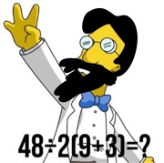

Méditations pythoniques pour typo-déficients
L'image de machine qu'on a donné d'une fonction dans le cours de mathématiques se prête aux fonctions en Python.
En effet, si ma fonction se présente comme :
def f(x1,x2,x3): #bla bla #bla bla return z1,z2
On comprend que :
- La machine s'appelle \(f\).
- Elle a besoin de trois objets x1, x2,x3 pour se mettre en marche.
- Quand elle a fini de travailler, elle produit deux objets z1, z2.
Des remarques sur ce code Python
- Programmer la fonction consiste à écrire la recette de la fonction.
- Les objets x1,x2,x3 sont appelés arguments d'entrée de la fonction, il sont supposés connus, donc inutile de mettre input(x1) etc. dans le code.
- Les objets z1, z2 sont produits par la machine donc inutile de les mettre dans un print. Ils sont appelés arguments formels de sortie.
On peut mettre autant d'arguments d'entrée et de sortie à partir de 0. Mais alors que se passe-til pour une fonction comme celle-ci :
def erreur(): print('Biwane, tu te trompes !')
- Cette fonction ne produit aucun objet, puisqu'elle ne contient aucun return. Elle produit donc du néant,du vent, du nihil, rien quoi.
- Cette fonction se met en marche sans qu'on lui donne d'objets, puisque la paire de parenthèses dans la première ligne ne contient rien.
Cette fonction se contente de faire un simple affichage à l'écran :
erreur()
Biwane, tu te trompes !
Mais alors, cette fonction ne produit pas une chaîne de caractères ? Regardons :
a = erreur()
Biwane, tu te trompes !
type(a)
NoneType
L' objet a est un objet de type sans type. Ce n'est donc sûrment pas une chaîne de caractères.
En revanche, regarde bien Biwane, si j'avais écrit :
def erreur(): return('Biwane, tu te trompes !')
puis :
a = erreur()
et enfin :
type(a)
str
la variable a récupère le produit de la fonction : une chaîne de caractères. Là je fais encore plus mon curieux :
a = erreur
type(a)
function
Est-ce que tu y vois plus clair dans les types maintenant ? Ou, dit autrement, vas-tu confondre encore les types de $f$ et $f(x)$ en maths ?
Remarque. Ah oui, comme promis, une photo :
{kind=link}